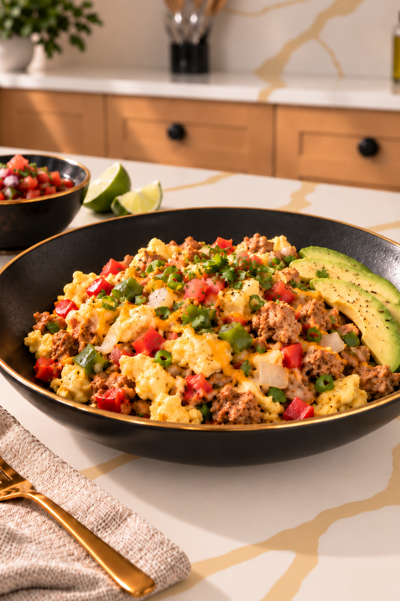

A stronger plan.
Built around your life.
Welcome to No Quarter Nutrition. Choose meals you genuinely enjoy, organize your week and shop with a purpose. Your coach handles your nutrition targets. You choose what goes on your plate.
Built from your cookbook
Signature breakfasts from the No Quarter Nutrition cookbook, alongside your saved personal recipes.
Forty recipes. One standard.
Browse the complete high protein menu. Four original cookbook recipes are ready to cook; the other 36 have working ingredient and method drafts awaiting Coach Luigi approval. Only completed recipes are eligible for macro based meal planning.

ORIGINAL COOKBOOK PHOTOGRAPHYA full week, at a glance.
Select a day on the calendar to plan breakfast, lunch, dinner and snacks. Your other days remain unchanged.
Totals use the nutrition values currently attached to eligible recipes; they are not a coach-assigned daily target. Unapproved cookbook drafts cannot be added to the meal calendar.
Eat well. Spend deliberately.
Choose where you shop and how much you want to spend. Enter or adjust that store's per-serving price estimates to build a sample week from eligible meals.
Current planning is limited to eligible recipes with nutrition data. This first budget preview can fill breakfast slots only. It does not estimate the cost of a complete week's groceries, snacks, taxes or pantry replacements. Additional meals and verified retailer pricing must be added before a full-budget guarantee is possible.
Create & calculate a meal.
List your ingredients as you go. See your running macros update when each ingredient has confirmed nutrition data. Save drafts anytime; finalized nutrition requires matched ingredients.
My saved meals
Stored only in this browser. You can edit and plan saved meals; they are not shared.
Client Favorites & Recipe Rewards.
A place to share what fuels you. Member sharing and rewards are not available yet.
Member community is not live yet
For now, build your own collection with My Recipes. Your saved meals stay in this browser and are not shared with other members.
Recipe Rewards rules (planned)
Potential prizes: one complimentary month of NQN app membership or one complimentary month of NQA coaching. Coaching awards require coach approval, eligibility, capacity limits, a clearly defined service level and published program rules. No automatic membership extension, payment adjustment or reward redemption is active.
One self-reported trial per unique authenticated member per approved recipe. Favorites and ratings are separate from trial counts. Creator rankings emphasize unique positive trials. Submissions require creator opt-in and moderator approval. Badges: first approved recipe, 10, 25, 50 and 100 unique trials. Rewards and public sharing are not available yet.
Track what you have.
Scan packages directly here, save your inventory and add missing items to your shopping list.
Scan into Pantry or Shopping List
Hold a barcode in the live camera frame. A detected barcode will look up the product without taking you out of the app. Confirm the product, then choose where to add it.
Live scanning recognizes barcodes automatically. Scan This Frame retries the current camera view without opening your phone camera.
USDA ingredient search requires internet. Food search may be temporarily unavailable. Barcode product data must be checked against packaging. A product without valid data remains unmatched.
Scanned products appear at the top. For planned recipe ingredients, select what you have (full, half, low or empty). Add a package size from its label for precise subtraction. If you don’t know the size, select “Enough for this plan” only when you’ve checked the package yourself. Fresh produce can still be entered in cooking units.
Still Need
Ingredients missing from planned recipes. Tap Add to Shopping List or add all. Items are not considered purchased until you check them off in Shopping List.
Your grocery list.
Combines your weekly cooking needs into realistic items to buy. Use My Pantry to enter what you already own. Check Purchased as you shop.
Your Shopping List
Select Add to Shopping List in My Pantry to include the missing ingredients here. Scanned pantry products are stored separately until their exact match and unit can be reconciled with a planned recipe; they are not silently deducted. Check Purchased as you shop.
Scanned Products Added to Shopping
Package availability is only subtracted when a package size is supplied or you explicitly confirm enough is available. Pantry quantities remain separate from cookbook recipe measurements. If you are unsure, leave the package size blank. Produce conversions are approximate (e.g. 1 medium pepper ≈ 1 cup chopped); adjust for actual size. Packages are estimates, not live store inventory. Cooking quantities and recipe macros remain unchanged. Confirm brand sizes and requirements before shopping. Optional ingredients are excluded from this first calculation. No live store pricing is included.